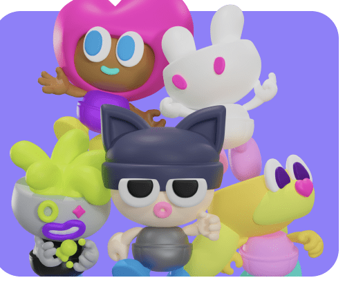

내려받으면, 내 아이폰에서
필요한 AI 모델을 직접 고르고 내려받아요. 대화와 AI 처리를 기기 안에서 끝내는 앱을 만들고 있어요.
온디바이스 나만의 AI 에이전트
나를 위한 AI가 내 아이폰 안에.
나만의 친구와 함께하는 일상, Regna.
iPhone 앱 · 베타 준비 중

우리가 만들고 있는 Regna
필요한 AI 모델을 직접 고르고 내려받아요. 대화와 AI 처리를 기기 안에서 끝내는 앱을 만들고 있어요.
좋아하는 캐릭터를 나만의 에이전트로. 생각 정리부터 일상의 작은 부탁까지 함께할 친구예요.
유료 AI API나 구독이 필요 없는 무료 앱을 목표로 해요. 모델을 받을 때는 인터넷과 저장 공간이 필요해요.
곧, 아이폰에서 만나요
지금은 Regna를 개발하고 있어요.
테스트할 수 있는 빌드가 준비되면 이곳에 TestFlight 링크를 올릴게요.
아직은 개발 중이에요. TestFlight 배포와 실제 기기 테스트가 끝난 뒤 설치 링크와 지원 기기를 안내할게요.
모델 다운로드 후 AI 대화를 기기에서 처리하는 방식으로 개발하고 있어요. 모델을 내려받거나 외부 웹사이트를 여는 작업에는 인터넷이 필요해요. 지원 범위는 출시할 때 정확히 안내할게요.
대화와 기억을 기기에 보관하고 AI 추론을 로컬에서 수행하는 것이 설계 원칙이에요. 앱의 실제 데이터 처리와 권한은 베타 출시 전에 개인정보 안내에 반영할게요. 이 웹사이트에는 로그인, 광고, 분석 도구가 없어요.